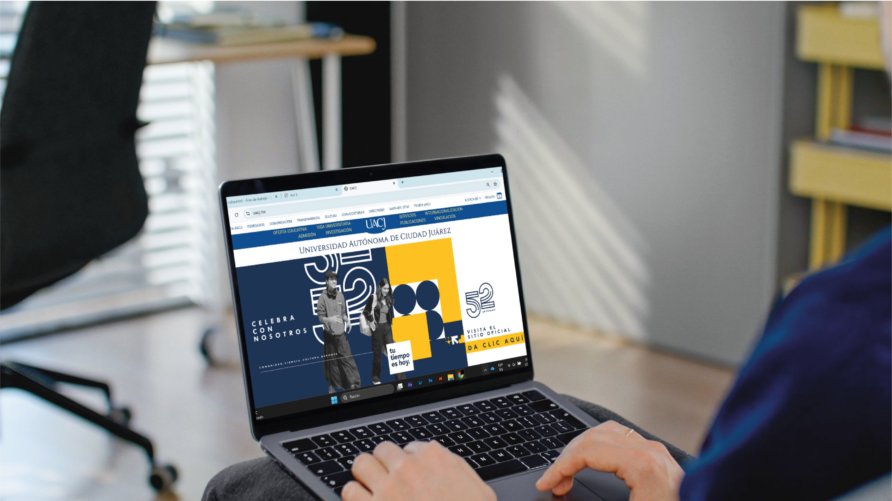

FIGMA
"En FIGMA trate de imitar una imagen que el Maestro nos habia enviado, creo que el resultado fue bastante bueno aunque claramente batalle para acomodar por aqui el tamaño de la imagen"

Jennifer Nevárez
Grupo: B
Diseño Web
"La pelicula que elegi fue "La sirenita" debido a que desde pequeña me ha gustado mucho, en este trabajo se implemento el hipertexto, la experiencia de ususario y el prototipado"
"En FIGMA trate de imitar una imagen que el Maestro nos habia enviado, creo que el resultado fue bastante bueno aunque claramente batalle para acomodar por aqui el tamaño de la imagen"
"Realizamos una actividad por equipos y todos participamos investigando atajos con el teclado en las computadoras, esto nos facilita el trabajo y nos ayudo a trabajar en equipo"
"Este diagrama fue realizado en equipos y se trabajo con una página y de ahi observamos diferentes categorias que a nuestro parecer podriamos cambiar, quitar o agregar"

"El diagrama de flujo fue realizado con un ejemplo de un juego, en nuestro caso fue del juego "Geometry dash" y ente diagrama se dierón pistas y a forma en la que se juega"
"Con base a la Conferencia que se organizo por parte de la Universidad, es que surgierón estos temas que fuerón de nuestro interes, se abordarón durantes una exposición y explique como es que la IA podria facilitar un poco mas el trabajo dentro del diseño
"Bocete en una hoja de máquina como es que cambiaria un sitio web a una página, el ejemplo que se tomo como referencia fue el sitio de la UACJ, a la cual le realize un cambios, ordene elementos y agregue unos botones extras

"Aquí ya se paso a limpio e boceto y se puede apreciar de forma mas clara como es que me gustaria que se ubicara cada cosa, en el orden y esta dividido en tres secciones principales"
"Se puede pareciar en este mapa como se veria a mas detalle, lo que pareceria como primer plano, segundo y tercero, mas aparte haciendo énfasis en cada imagen y como es el orden de cada cosa"

"En base a la lectura de la página 17-18 del libro de Joan Costa, es que realize esta ilustración snecilla, ya que el ecplica que no= es una imagen, puede ser algo abstracto, simple y con formas, mientras se entienda el mensaje por medio de figuaras y con ayuda de los colores, esta bien"


"Aquí muestro las distintas vistas del diseño final de la página web."



En esta sección se muestran los diferentes modos de aplicar color en CSS: Hexadecimales, Keywords, RGB, RGBA, HSL y HSLA.
Si deseas dejar un mensaje o retroalimentación sobre mi bitácora, completa el siguiente formulario:
Esta animación representa movimiento y creatividad: burbujas de distintos colores flotando de lado a lado.
En esta sección se mostrará la imagen correspondiente a la cotización del proyecto.

Los SVG son imágenes vectoriales que pueden escalarse sin perder calidad. Se usan para íconos, logotipos y animaciones ligeras en la web.
Ejemplo: círculos SVG con animación de crecimiento
Los filtros permiten aplicar efectos visuales a imágenes o elementos, como desenfoque, saturación, brillo o tonos. Aquí se muestra un efecto interactivo.
Pasa el cursor sobre la imagen üëÜ